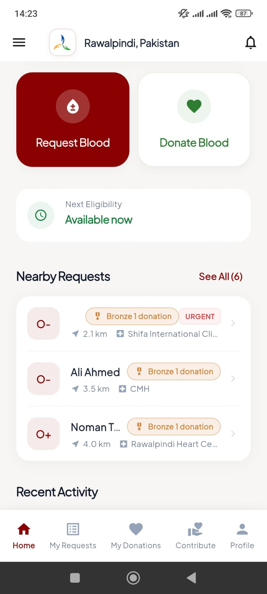

Linking Veins,
Saving Lives
Connecting verified blood donors with recipients in need. Built by the Family & Fellows Foundation, Blood Link promotes transparent, community-driven donation with smart location-based matching.

Donor Community
Contribution Visibility
Your donation history and community contributions become visible to other verified donors. If you ever request blood, previous donors can see your track record — building trust through transparency.
Community Transparency
Verified donors can view each other's contribution history.
Social Proof
Your generosity is recorded and celebrated within the ecosystem.
Priority Trust
Build instant trust when you need help by showing your past support.

Verified Donor
Active Community MemberThe Donation Ecosystem
Connecting those in need with those who can help, securely and transparently.
Request Blood
Recipients create a verified request for themselves or a loved one, specifying blood type and urgency.
Staff Verification
Foundation staff reviews every request via the admin dashboard to ensure authenticity and integrity.
Donor Action
Verified donors within 5-20km receive instant alerts, view the request, and proceed to save a life.
How Blood Link Works
Blood Link is a coordination layer — not a blood bank. All donations happen through verified hospitals and blood banks for safety and transparency.
Sign Up
Create your account using Google or Email. Quick and secure authentication gets you started in seconds.
Set Your Blood Group
Navigate to the Profile Tab and select your blood group. This enables smart matching with compatible requests nearby.
View Nearby Requests
Browse verified blood requests within 5km, 10km, or 20km radius. See urgency levels, blood type needed, and hospital location on an interactive map.
Accept & Go to Hospital
Accept a request and proceed to the designated hospital or blood bank. You'll get directions and contact information for the facility.
Upload Donation Proof
After donating at the hospital, upload proof of donation (hospital receipt, certificate, or photo). This ensures transparency and trust.
Staff Reviews & Approves
Foundation staff verifies your donation proof within 24-48 hours. Your approved donation is recorded permanently in your history.
Profile Auto-Verified
On your first verified donation, your profile receives a verified badge. Other donors can see your donation history if you ever need blood.
You're a Life Saver!
Your contribution is visible to the community. Keep donating to level up!
Community Contribution Visibility
Your donation history and community contributions become visible to other verified donors. If you ever request blood, previous donors can see your track record — building trust through transparency.
Sign Up
Create your account using Google or Email if you're a new user. Existing users can log in directly.
Complete Profile & Verify ID
Submit a valid ID document for verification. This ID is securely reviewed and automatically deleted after verification to protect your privacy.
Submit Blood Request
Create a request for yourself or blood relatives only. You must attach the official Blood Requisition Form provided by the hospital.
Staff Reviews Request
Foundation staff carefully reviews your documents. They recommend approval based on the authenticity of submitted forms and urgency level.
Request Visible to Donors
After staff recommendation, your request becomes visible to nearby verified donors. They receive push notifications based on blood type compatibility.
Donor Accepts Request
When a donor accepts, you receive a notification. The donor proceeds to the hospital and donates blood. They upload proof after donation.
Claim Blood from Hospital
You're informed when the donation is complete. Proceed to the hospital or blood bank to claim the blood using proper hospital protocols.
Request Completed
Mark your request as complete. The entire transaction is logged, and both parties contribute to building the trusted donor community.
Request Fulfilled!
Thank you for trusting Blood Link. Consider becoming a donor to help others!
Blood Link is a Coordination Layer
Important: Blood Link is NOT a blood bank. All donations happen exclusively through verified hospitals and blood banks. There is no direct contact between donors and recipients to prevent blood trafficking/selling. This ensures safety, traceability, and compliance with medical regulations.
Simplicity Meets Power
Location Discovery
Find verified requests nearby with configurable 5km, 10km, or 20km detection radius.
Smart Matching
Intelligent filtering ensures donors only see requests compatible with their blood type.
Instant Alerts
Get immediate Firebase push notifications when a verified request matches your profile.
Trust & Verify
Strict profile verification and request validation by foundation staff.
Safety Cooldown
Automatic 3-month waiting period enforcement to ensure donor health and safety.
Impact Tracking
Track your net contribution score: total donations made minus requests created.
Donor Recognition Tiers
Earn badges and leveling upgrades as you save more lives.
Bronze Donor
The start of a heroic journey.
Silver Donor
A committed guardian of life.
Gold Donor
The ultimate symbol of selflessness.
Platinum Donor
An elite savior of the community.
Hero Donor
A living legend of humanity.
Visual Walkthrough
Transparency & Trust
Designed by the Family & Fellows Foundation, Blood Link addresses the critical challenge of connection. We verify every request to ensure donation integrity, allowing donors to track their net contribution score and see the real impact of their generosity.
- Verified Requests & Profiles
- Instant Push Notifications
- 3-Month Donation Safety Cooldown
Multiple Colors
RTL Version
- RTL Version
- LTR Version
Boxed Version
- Boxed
- Full width
Sticky Header
- Yes
- No
Dark Verion
- Yes
- No
You will find much more options for colors and styling in admin panel. This color picker is used only for demonstration purposes.
buy now